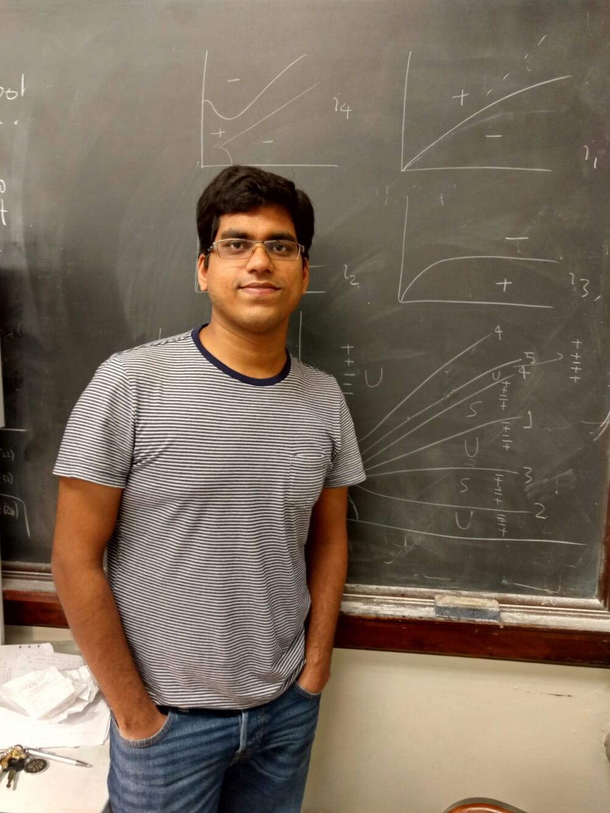

Ashish Kumar Pandey

About Me
I am an Assistant Professor Department of Mathematics at the Indraprastha Institute of Information Technology Delhi (IIITD) .
Curriculum Vitae
Research
My primary research interest lies in Partial Differential Equations. I work on prolems related to stability of solutions of certain PDEs. PDEs, I have worked with so far, are all models of waves on a water surface. I am also interested in predictions of characteristics of tropical cyclones as it is closely related to shallow water wave models. I use models of machine learning in conjuction with PDEs describing tropical cyclone phenomena to get these predictions. I am also interested in some theoretical aspects of machine learning and its applications in Biology. In addition, I am also involved in some projects in Game Theory and Number Theory. For more details, please look at full lists of publications and preprints below.
Publications
- Modulational instability in a full-dispersion shallow water model arxiv,
submitted (August 2016) 56 pages (with Vera Mikyoung Hur).
- Modulational instability in nonlinear nonlocal equations of regularized long wave type arxiv, Physica D: Nonlinear Phenomena
(2016), no. 325, 98-112 (with Vera Mikyoung Hur).
- Transverse instability in rotation-modified Kadomtsev-Petviashvili equation, in preparation (with Vera Mikyoung Hur and Mathew A. Johnson).
Presentations
- Topic not yet decided,
The Tenth IMACS International Conference on
Nonlinear Evolution Equations and Wave Phenomena: Computation and Theory, Athens, GA (April 2017).
-
Transverse instability in full-dispersion Kadomtsev-Petviashvili equation, JMM, Atlanta, GA (January 2017).
-
Modulational Instability in KdV, BBM, and
Boussinesq type equations, The 2016 Annual Meeting
of the Illinois Section of the Mathematical
Association of America (ISMAA), Illinois College (April 2016).
Seminar Talks
-
Modulational instability in nonlinear dispersive equations, Computational and Applied Mathematics seminar, University of Kansas (September 2016).
-
Modulational Instability in KdV, BBM, and Boussinesq type equations, Harmonic Analysis and Differential Equations Seminar (HADES), UIUC (February 2016).
Poster Presentations
-
Modulational instability in a full-dispersion shallow water model, SIAM Conference on Nonlinear Waves and Coherent Structures, Philadelphia, PA (August 2016).
-
Modulational instability in a full-dispersion shallow water model, Gene Golub SIAM Summer School, Drexel University (August 2016).
-
Modulational instability in a full-dispersion shallow water model, Analysis of Partial Differential Equations using Dynamical Systems Techniques:
A conference in honor of the 60th birthday of C. Eugene Wayne, Boston University (June 2016).
-
Modulational instability in nonlinear dispersive equations, KUMU PDE, Dynamical Systems and Applications, University of Kansas (April 2015).
Teaching
Current course
Fall 2016, Teaching Assistant, Math 221:Calculus I
Past courses
- Fall 2015, Teaching Assistant, Math 241:Calculus III
- Summer 2015, NetMath Teaching Assistant, Math 286:Differential equations
- Spring 2015, Teaching Assistant, Math 231:Calculus II
- Spring 2014, Teaching Assistant, Math 231:Calculus II
- Fall 2013, Teaching Assistant, Math 221:Calculus I
Teaching Awards